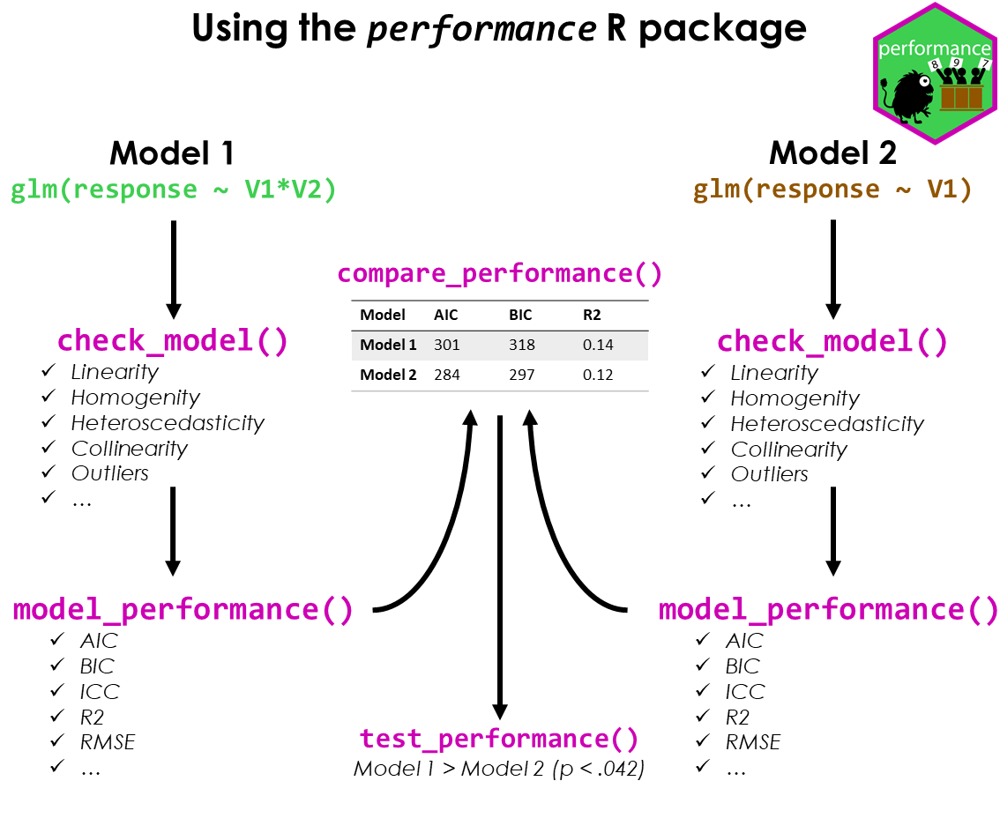

Analytic workflow: Assessing model fit
Source:vignettes/workflow_performance.rmd
workflow_performance.rmdThis vignette shows how to use the performance package to check the fit of a model, how to detect misspecification and how to improve your model. The basic workflow of the performance package can be summarized as follows:
- fit a regression model
- check the model fit and assess model fit indices
- if necessary, fit another model that could potentially improve the fit
- compare the model fit indices and perform statistical tests to determine which model is the best fit

In the following, we will demonstrate this workflow using a model with a count response variable. We will fit a Poisson regression model to the Salamanders dataset from the glmmTMB package. The dataset contains counts of salamanders in different sites, along with information on the number of mines and the species of salamanders. We will check the model fit and assess the model fit indices.
Problems that may arise with count response variables are zero inflation and overdispersion. Zero inflation occurs when there are more zeros in the data than expected under the Poisson distribution. Overdispersion occurs when the variance of the data is greater than the mean, which violates the assumption of equidispersion in the Poisson distribution.
We will check for these problems and suggest ways to improve the model fit, i.e. if necessary, we will fit another model that could potentially improve the fit. Finally, we will compare the model fit indices and perform statistical tests to determine which model is the best fit.
Fit the initial model
We start with a generalized mixed effects model, using a Poisson distribution.
library(performance)
model1 <- glmmTMB::glmmTMB(
count ~ mined + spp + (1 | site),
family = poisson,
data = glmmTMB::Salamanders
)First, let us look at the summary of the model.
library(parameters)
model_parameters(model1)We see a lot of statistically significant estimates here. No matter, which philosophy you follow in terms of interpreting statistical test results, our conclusions we draw from our regression models will be inaccurate if our modeling assumptions are a poor fit for the situation. Hence, checking model fit is essential.
In performance, we can conduct a comprehensive visual
inspection of our model fit using check_model(). We won’t
go into details of all the plots here, but you can find more information
on all created diagnostic plots in the dedicated
vignette.
For now, we want to focus on the posterior predictive checks, dispersion and zero-inflation as well as the Q-Q plot (uniformity of residuals).
check_model(model1)Note that unlike plot(), which is a base R function to
create diagnostic plots, check_model() relies on
simulated residuals for the Q-Q plot, which is more accurate
for non-Gaussian models. See this
vignette and the documentation of simulate_residuals()
for further details.
The above plot suggests that we may have issues with overdispersion
and/or zero-inflation. We can check for these problems using
check_overdispersion() and
check_zeroinflation(), which will perform statistical tests
(based on simulated residuals). These tests can additionally be used
beyond the visual inspection.
check_overdispersion(model1)
check_zeroinflation(model1)As we can see, our model seems to suffer both from overdispersion and zero-inflation.
First attempt at improving the model fit
We can try to improve the model fit by fitting a model with zero-inflation component:
model2 <- glmmTMB::glmmTMB(
count ~ mined + spp + (1 | site),
ziformula = ~ mined + spp,
family = poisson,
data = glmmTMB::Salamanders
)
check_model(model2)Looking at the above plots, the zero-inflation seems to be addressed
properly (see especially posterior predictive checks and
uniformity of residuals, the Q-Q plot). However, the
overdispersion still could be present. We can check for these problems
using check_overdispersion() and
check_zeroinflation() again.
check_overdispersion(model2)
check_zeroinflation(model2)Indeed, the overdispersion is still present.
Second attempt at improving the model fit
We can try to address this issue by fitting a negative binomial model instead of using a Poisson distribution.
model3 <- glmmTMB::glmmTMB(
count ~ mined + spp + (1 | site),
ziformula = ~ mined + spp,
family = glmmTMB::nbinom1,
data = glmmTMB::Salamanders
)
check_model(model3)Now we see that the plot showing misspecified dispersion and zero-inflation suggests that the overdispersion is better addressed than before. Let us check again:
check_overdispersion(model3)
check_zeroinflation(model3)Comparing model fit indices
There are different model fit indices that can be used to compare
models. For our purpose, we rely on the Akaike Information Criterion
(AIC), the corrected Akaike Information Criterion (AICc), the Bayesian
Information Criterion (BIC), and the Proper Scoring Rules. We can
compare the models using compare_performance() and
plot().
result <- compare_performance(
model1, model2, model3,
metrics = c("AIC", "AICc", "BIC", "SCORE")
)
result
plot(result)The weighted AIC and BIC range from 0 to 1, indicating better model fit the closer the value is to 1. The AICc is a corrected version of the AIC for small sample sizes. The Proper Scoring Rules range from -Inf to 0, with higher values (i.e. closer to 0) indicating better model fit.
The above results suggest that indeed our third model is the best fit.
Statistical tests for model comparison
We can also perform statistical tests to determine which model is the
best fit using test_performance() or anova().
test_performance() automatically selects an appropriate
test based on the model family. You can also call the different tests,
like test_likelihoodratio(), test_bf(),
test_wald() or test_vuong() directly.
test_performance(model1, model2, model3)We see, first, that test_performance() used the Bayes
factor (based on BIC comparison) to compare the models. And second, that
both the second and third model seem to be significantly better than the
first model.
Now we compare the second against the third model
test_performance(model2, model3)
test_likelihoodratio(model2, model3)We see that both the Bayes factor and likelihood ratio test suggest that the third model is significantly better than the second model.
What does this mean for our inference?
model_parameters(model3)Obviously, although we might have found the best fitting model,
coefficients for the zero-inflation component of our model look
rather spurious. We have very high coefficients here. We still
might find a better distributional family for our model, and try
nbinom2 now.
model4 <- glmmTMB::glmmTMB(
count ~ mined + spp + (1 | site),
ziformula = ~ mined + spp,
family = glmmTMB::nbinom2,
data = glmmTMB::Salamanders
)
check_model(model4)
check_overdispersion(model4)
check_zeroinflation(model4)
test_likelihoodratio(model3, model4)
model_parameters(model4)Based on these results, we might even go with
model4.
Conclusion
Statistics is hard. It is not just about fitting a model, but also about checking the model fit and improving the model. This also requires domain knowledge to consider whether all relevant predictors are included in the model (and whether all included predictors are relevant!).
The performance package provides a comprehensive set of tools to help you with this task. We have demonstrated how to use these tools to check the fit of a model, detect misspecification, and improve the model. We have also shown how to compare the model fit indices and perform statistical tests to determine which model is the best fit. We hope this vignette has been helpful in guiding you through this process.